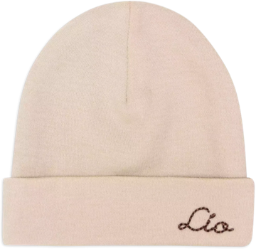
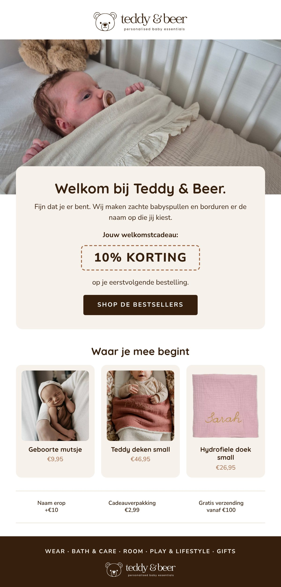
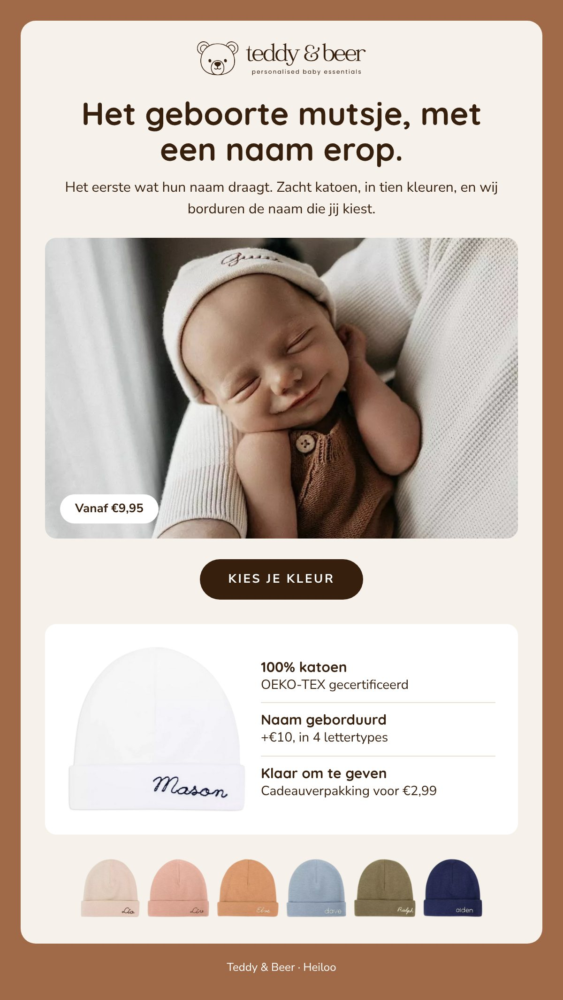

Voorbeelden voor Teddy & Beer
Vijf redenen om een naam te laten borduren.
Vijf advertenties en twee nieuwsbrieven, gemaakt met jullie eigen foto's en productinformatie. Een idee van Issey Kooijmans van Digital Essence; niets hiervan is gepubliceerd.
Hoi team Teddy & Beer, een mutsje of dekentje met de naam van een baby erop is precies het cadeau waar mensen op Instagram naar zoeken. Jullie adverteren al; ik heb vijf advertenties met andere invalshoeken en twee nieuwsbrieven gemaakt, met jullie eigen foto's. Niets is gepubliceerd. Past het niet, zeg het gerust.
Eerst even uitgelegd
Wat is een invalshoek?
Een invalshoek is de reden waarom iemand iets koopt. Hetzelfde mutsje met naam kun je op heel veel manieren verkopen, omdat niet iedereen om dezelfde reden koopt.
Hetzelfde mutsje met naam, vijf verschillende redenen om het te kopen. Elke reden wordt een eigen advertentie.

- 01Zoekvraag → antwoord"Wat geef ik als kraamcadeau dat niet in een la verdwijnt?"
- 02Het detail"Hoe ziet zo'n geborduurde naam er in het echt uit?"
- 03Hoe het werkt"Is personaliseren niet ingewikkeld, en hoe lang duurt het?"
- 04De makers"Wie zit er eigenlijk achter deze webshop?"
- 05Een goede deal"Kan ik het nog net iets voordeliger krijgen?"
We testen die invalshoeken naast elkaar. Na een paar dagen zie je welke het meest verkoopt. Daar maken we er meer van, en wat niet werkt, gaat eruit.
Zo werk ik
Van eerste blik tot bestelling.
Niet iedereen die een advertentie ziet, is meteen klaar om te kopen. Daarom maak ik voor elke stap andere advertenties. Zo spreek je iedereen aan op het moment waar hij of zij zit.
- Stap 1 · Top of funnel
Kennismaken
Mensen die Teddy & Beer nog nooit hebben gezien.
Doel: dat ze stoppen met scrollen en nieuwsgierig worden.
Zoals een etalage: je loopt langs en kijkt even naar binnen.
- Stap 2 · Middle of funnel
Overtuigen
Mensen die jullie al eens zagen, maar nog twijfelen.
Doel: hun vragen beantwoorden. Wat is het, waarom dit en niet iets anders?
Zoals een verkoper die rustig uitlegt wat het verschil is.
- Stap 3 · Bottom of funnel
Kopen
Mensen die bijna willen bestellen.
Doel: het laatste duwtje, zoals een aanbod, reviews of de zekerheid van gratis retour.
Zoals de kassa: duidelijk, makkelijk en zonder risico.
Wat ik zag: de zes advertenties die nu live staan laten vooral producten zien, zoals het ruffle laken, het teddy omslagdoek en de dekens. Wat nog ontbreekt: een advertentie die uitlegt hoe personaliseren werkt, een die het team achter de naam laat zien, en een laatste duwtje met jullie echte 10% nieuwsbriefkorting.
Advertenties · 9:16
Vijf advertenties, verdeeld over de stappen.
Tik op een advertentie om hem groot te bekijken.
Voor mensen die Teddy & Beer nog niet kennen.
Voor mensen die jullie kennen, maar nog twijfelen.
Voor wie bijna bestelt.
Waarom advertenties
Zo groeien kids- en babymerken op Instagram.
Een kraamcadeau zoek je niet elke dag. Daarom werkt het om steeds nieuwe mensen te bereiken op het moment dat er in hun omgeving een baby komt. Merken die elke week nieuwe varianten testen, houden hun kosten per aankoop laag, en een welkomstmail zorgt dat wie zich aanmeldt ook echt bestelt.
Aantal advertenties: Meta Advertentiebibliotheek, 27-11-2026.
Nieuwsbrief 1 van 2 · Welkomstmail
Welkom bij Teddy & Beer.
De eerste mail na aanmelding: hij levert meteen de 10% korting die jullie bij de nieuwsbrief beloven, en laat drie producten zien om mee te beginnen.
- Hero met jullie eigen foto van een baby onder een dekentje met naam
- De 10% korting op de eerstvolgende bestelling groot in beeld
- Geboorte mutsje, teddy deken en hydrofiele doek met echte prijzen, menu onderaan

Nieuwsbrief 2 van 2 · Productspotlight
Het geboorte mutsje, met een naam erop.
Eén product groot in beeld: het geboorte mutsje van €9,95, met wat het bijzonder maakt en alle kleuren op een rij.
- Foto van een slapende baby met het mutsje met naam
- 100% katoen, OEKO-TEX, naam +€10 in 4 lettertypes
- Cadeauverpakking €2,99 en de kleuren op een rij

Ritme
Zo kan een week eruitzien.
Dit is een voorbeeld, geen vast pakket. De kracht zit in het ritme: regelmatig nieuwe invalshoeken testen in elke stap, en je nieuwsbrief vast versturen. Wat werkt, doen we vaker.
- MaNieuwe advertenties liveNieuwe invalshoeken in elke stap tegelijk testen.
- DiMeekijkenWelke invalshoek pakt de doelgroep op?
- WoBijsturenBudget naar wat werkt, de rest eruit.
- DoNieuwsbrief verstuurdVast moment, zodat lezers erop gaan rekenen.
- VrKorte updateWat werkte en wat we volgende week doen.
Benieuwd hoe dit voor Teddy & Beer werkt?
Een kwartiertje bellen is genoeg om te kijken of het past. Geen verplichtingen.